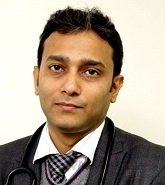

Dr. Saptarshi Bhattacharya
QUALIFICATIONS
Senior Consultant , MBBS, MD, DM, 10 years of experience
ABOUT DOCTOR
Currently associated as Head and Sr. Consultant with Department of Endocrinology & Diabetes at Max Super Speciality Hospital, Patparganj.
Renowned name in the field of Endocrinology
Deals with both adult and paediatric hormonal diseases such as diabetes, thyroid disorders, Polycystic Ovary Syndrome (PCOS), male sexual dysfunction, osteoporosis, etc
Primary focus is on diabetes, thyroid disorders and other hormonal problem
Expertise in Diabetes including gestational diabetes, Thyroid disorders, Obesity, Osteoporosis, Erectile, Dysfunction, Male Infertility and other Male Sexual Disorders, Female Hormonal Disorders like PCOS Galactorrhea, Pituitary Diseases, Delayed and early puberty, Rickets, Osteomalacia, Hyperparathyroidism and other Metabolic Bone Diseases
Interests are Type 1 Diabetes, Type 2 Diabetes, Gestational Diabetes, Gigantism and Acromegaly, Cushing Syndrome, Hyperprolactinemia, Hyperthyroidism, Hypothyroidism and Polycystic Ovary Syndrome
Member of Indian Society for Pediatric & Adolescent Endocrinology and Indian Society for Bone & Mineral Research
SPECIALIZATION :
Diabetes, thyroid disorders, Polycystic Ovary Syndrome (PCOS), male sexual dysfunction, osteoporosis, gestational diabetes, Thyroid disorders, Obesity, Osteoporosis, Erectile, Dysfunction, Male Infertility and other Male Sexual Disorders, Female Hormonal Disorders like PCOS Galactorrhea, Pituitary Diseases, Delayed and early puberty, Rickets, Osteomalacia, Hyperparathyroidism and other Metabolic Bone Diseases.
List Of Treatments
Diabetes Stem Cell Treatment
Endocrine Stem Cell Therapy
WORK EXPERIENCE
Senior Consultant, Max Super Speciality hospital, Patparganj, New Delhi
Consultant, Max Hospital, Noida
Consultant, Kailash Hospital, Noida